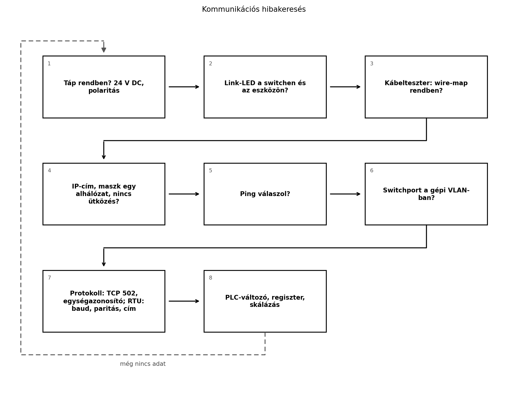

![Vezérlőszekrény +S1: G1 24 V DC tápegység, A1 PLC 192.168.0.20, A2 HMI az ajtón 192.168.0.10, A3 nyolcportos ipari switch (8. port VLAN 10 az A4 tűzfal felé, 7. port portdugóval lezárva), A4 tűzfal/átjáró. Hajtásszekrény +S2: U1 192.168.0.31 és U2 192.168.0.32 frekvenciaváltó Cat 6 S/FTP kábellel. RS-485 Modbus RTU lánc A1 → P1 energiamérő (cím 1) → F5 motorvédő relé (cím 2), a két végén 120 Ω lezárás. Szaggatott zónahatár: gépi zóna | irodai zóna, az irodai hálózat csak az A4-en át érhető el. A szekrények között potenciálkiegyenlítő vezető.](figures/img/ve130-2.png)
Statikus változat (mint a PDF-ben)
Egy csomagológép villamos szerelőjeként egyszer azt látod, hogy a gép vezérlőszekrényében nemcsak mágneskapcsolók és motorvédő kapcsolók vannak, hanem egy PLC, egy érintőképernyős HMI-panel és egy switch, amelyből sárga Ethernet-kábelek indulnak a frekvenciaváltókhoz. A megrendelő arra kér, hogy kapcsold be az új HMI-t, és kösd rá a meglévő vezérlésre, hogy a kezelő a panelról lássa a hőmérséklet-riasztásokat. Ha a hálózatot „fekete dobozként” kezeled, nem tudod megállapítani, miért nem jelenik meg a kép, vagy miért szakad meg a kommunikáció egy földelési hiba miatt. Ez az alfejezet azt tanítja meg, hogy a vezérlőberendezések informatikai hálózatát is ugyanolyan szerelői fegyelemmel kezeld, mint az erősáramú részeket: megfelelő kábelezéssel, árnyékolással, címzéssel és dokumentálással.
Egy tipikus gépi vezérlésben a berendezések három rétegbe rendeződnek: legalul a terepi eszközök (frekvenciaváltók, motorvédő relék, mérők), felettük a vezérlőhálózat (PLC, HMI, switch), legfelül a felügyeleti réteg (mérnöki munkaállomás, adatnaplózó), amely már az irodai hálózat felől érkezik. Az alábbi rajz ezt egy valódi szekrény-topológián mutatja: milyen eszköz hol van, milyen kábellel, melyik portra és milyen címmel csatlakozik.
Ábraértelmezés. A HMI (A2) nem közvetlenül a terepi eszközökhöz csatlakozik, hanem a switchen át a PLC-től (A1) kapja az adatokat; a PLC gyűjti az állapotjeleket, és küldi a parancsokat. A frekvenciaváltók ipari Etherneten, csillagban, a switch egy-egy portjára csatlakoznak; a mérő (P1) és a motorvédő relé (F5) RS-485 Modbus RTU láncon, leágazás nélkül, és a lánc két fizikai végén (A1 és F5) van egy-egy 120 Ω-os lezárás, középen (P1) nincs. Az irodai hálózatot a gépi zónától az A4 tűzfal választja el; a nem használt switchport portdugóval lezárt és a konfigurációban letiltott. A rajz adatait az alábbi címlista foglalja össze – ezt a dokumentációban a szekrény mellé kell tenni, és minden módosításkor frissíteni.
| Eszköz | Jelölés | IP- / Modbus-cím | Port | Kábel | Árnyékolás bekötése |
|---|---|---|---|---|---|
| PLC | A1 | 192.168.0.20 | A3:1; soros port | Cat 6 S/FTP; RS-485 árnyékolt csavart érpár | Ethernet: mindkét végen, 360°; RS-485: egy ponton |
| HMI (ajtón) | A2 | 192.168.0.10 | A3:2 | Cat 6 S/FTP, hajlékony | mindkét végen |
| Frekvenciaváltó 1 | U1 | 192.168.0.31 | A3:3 | Cat 6 S/FTP | mindkét végen, 360° |
| Frekvenciaváltó 2 | U2 | 192.168.0.32 | A3:4 | Cat 6 S/FTP | mindkét végen, 360° |
| Tűzfal / átjáró | A4 | 192.168.0.1 (gépi oldal) | A3:8 (VLAN 10) | Cat 6 S/FTP | mindkét végen |
| Energiamérő | P1 | Modbus RTU cím 1 | RS-485 lánc | árnyékolt csavart érpár (A, B, GND) | egy ponton, a szekrényben |
| Motorvédő relé | F5 | Modbus RTU cím 2 | RS-485 lánc vége (120 Ω) | árnyékolt csavart érpár (A, B, GND) | egy ponton, a szekrényben |
| 24 V DC tápegység | G1 | – | – | – | – |
A címek és a port-kiosztás mintaértékek; az árnyékolás bekötésének módját a protokoll-irányelv és a gyártó adja (ellenőrizendő: PROFINET/Modbus szerelési irányelv, gyártói előírás). Kérdés: melyik eszközt kell a kiosztásban megváltoztatni, ha egy harmadik Modbus-eszköz kerül a lánc végére az F5 után?
Definíció. Az ipari kommunikációs hálózat olyan adatátviteli rendszer, amely vezérlőberendezések (PLC-k, HMI-k, frekvenciaváltók, intelligens védelmek) között továbbít mérési, állapot- és parancsadatokat. Az ipari hálózat célja, hogy a vezetékek számát csökkentse, a diagnosztikát gyorsabbá tegye, és a termelési adatokat felügyeleti rendszerekbe juttassa el.
Definíció. A HMI (Human–Machine Interface, magyarul ember–gép kapcsolat) olyan kezelőfelület, amelyen a gépkezelő látja az üzemállapotot, riasztásokat kezel, paramétereket állít, valamint nyugtázhat és naplózhat eseményeket. A HMI lehet egyszerű szöveges kijelző, érintőképernyős panel vagy számítógépen futó felügyeleti képernyő.
Az ipari hálózatokban a protokoll határozza meg, hogy az eszközök milyen formátumban és milyen sorrendben cserélnek adatot. A leggyakoribb ipari megoldások:
Szabály. A protokoll kiválasztását nem a szerelőnek kell eldöntenie, hanem a tervezőnek vagy a gép gyártójának. A szerelő feladata a kiválasztott protokollhoz tartozó kábelezés, csatlakozók, lezárások és földelés pontos kivitelezése, valamint a beüzemelés utáni dokumentálás.
A hálózat tervezett sebessége és a kábelhossz a gyártói adatlapon szerepel; például a 100 Mbit/s-os Ethernetnél a réz szegmens legfeljebb 100 m, a Modbus RTU-nál a maximális hossz a sebességtől függ, tipikusan 1200 m lassú sebességnél (ellenőrizendő: az aktuális gyártói adatok szerint). A szerelő ezeket az értékeket nem tervezési előírásként, hanem a helyszíni ellenőrzés támpontjaként használja.
Az ipari hálózat megbízhatóságát legtöbbször a kábelezés minősége dönti el. A hálózati kábel nem „gyengeáramú, tehát mindegy”; a rossz árnyékolás vagy a hibás földelés a frekvenciaváltók és motorok zavarai miatt kommunikációs hibákat okoz.
Ethernet-kábelezés. A gépi vezérlésben legalább Cat 5e, jobb esetben Cat 6 vagy Cat 6a kábelt használnak. A csatlakozó általában RJ45 (8P8C), de a rezgésnek kitett gépeken gyakran M12, D-kódolású, 4 pólusú ipari csatlakozó. A kábel lehet UTP (árnyékolatlan), FTP (fóliázott) vagy STP (páronként és összesen is árnyékolt). Ipari környezetben UTP-t csak nagyon tiszta, zavarszegény szekrényen belül szabad használni; a szekrények közötti szakaszokon FTP vagy STP a jó választás. Az árnyékolás bekötését a protokoll szerelési irányelve és a gépgyártó határozza meg. Ipari Ethernetnél (pl. PROFINET) az árnyékolást jellemzően mindkét végén, kis impedanciájú (360°-os) csatlakozással kötjük be, és a szekrények között potenciálkiegyenlítő vezetőt húzunk, hogy az árnyékoláson ne folyjon kiegyenlítő áram; alacsony frekvenciás analóg jeleknél (0–10 V, 4–20 mA) gyakori az egyvégű bekötés (ellenőrizendő: PROFINET/PROFIBUS szerelési irányelv, gépgyártói földelési utasítás).
Soros kábelezés (RS-485 / Modbus RTU). Itt csavart érpárt és közös jel-vonatkoztatási (GND) vezetőt használnak. Az RS-485 vonal két adatvezetője A és B jelű; a vonal mindkét fizikai végére a gyártó által előírt lezáró ellenállást (tipikusan 120 Ω) kell bekötni. A lezárás hiánya reflexiót okoz, ezért a kommunikáció időnként megszakad, vagy rossz keretek érkeznek. A soros vonal (RS-485) árnyékolásának bekötése is a gyártói utasítás szerint történik; egyvégű vagy mindkét végű bekötésnél a potenciálkiegyenlítésről és a földhurok elkerüléséről gondoskodni kell.
Az alábbi tabló a leggyakoribb csatlakozókat és kábeleket mutatja. Az (a) rajzon az 1 RJ45 dugó érintkezőire a 2 T568B sorrend szerint kerülnek az erek (1 fehér-narancs, 2 narancs, 3 fehér-zöld, 4 kék, 5 fehér-kék, 6 zöld, 7 fehér-barna, 8 barna); a két kábelvégen azonos sorrend kell. A (b) rajz az M12 D-kódolású csatlakozót mutatja: a 3 kódolóhorony csak az illeszkedő párt engedi, a 4 érintkezők kiosztását a gyártói rajzról vedd. A (c) keresztmetszeteken az UTP árnyékolatlan, az FTP közös fóliát, az STP (S/FTP) páronkénti fóliát és közös fonatot kap. A (d) rajzon az 5 RS-485 vonal az állomásokat láncszerűen fűzi fel, a 6 lezáró ellenállás csak a vonal két fizikai végén van.
Tipikus hiba, hogy a krimpelésnél a párokat „logikusan” egymás mellé rakják (1-2, 3-4, 5-6, 7-8): ilyenkor a 3-as és a 6-os érintkezőre nem egy sodrott pár két ere kerül, a folytonossági próba mégis jó, de a vonal zavarérzékeny lesz; vagy hogy az RS-485 lezáró ellenállást minden állomáson bekapcsolják. A HTML-kiadásban a részekre mutatva azok szerepe olvasható.
Táp- és jelkábel szétválasztása. Szabály. Az ipari hálózati kábeleket a motorvezetékektől és a frekvenciaváltó kimeneti kábeleitől elkülönítve kell vezetni. Ha a jelkábel és az erősáramú kábel azonos kábeltálcában fut, legalább a gyártói vagy szabványos elkülönítési távolságot (példaként a Motorvédelmek, lágyindítók és frekvenciaváltók az elosztóban alfejezetben a vezérlőkábelre 30 cm) meg kell tartani, vagy a kettő közé földelt fém elválasztólapot kell tenni. A kereszteződéseknél a jelkábel ne feküdjön hosszan a motorvezeték mellé. Az MSZ EN 60204-1 gépi berendezésekre vonatkozó szabvány is megköveteli a feszültségkategóriák szerinti elkülönítést, de a pontos távolságokat a gyártói és üzembe helyezési utasítás adja meg (ellenőrizendő: aktuális szabvány és gyártói adatlap).
A HMI-t a vezérlőszekrény elejére vagy a gép kezelőpultjára szerelik. A panel hátlapján jellemzően 24 V DC tápfeszültség-, Ethernet- és esetenként soros kommunikációs csatlakozó, valamint USB- vagy SD-kártyanyílás található. A beépítésnél az előlapi védettség szokásos értéke IP65, a hátlapé IP20; ezt a szekrény kialakításánál figyelembe kell venni.
A HMI feladatai:
A HMI a PLC-vel kommunikál, ezért a panelban nem a fizikai
kapocsszámokat, hanem a PLC-változók címét kell megadni. Például egy
Modbus TCP-s HMI-n a %MW10 regiszter jelentheti a
vízhőmérsékletet, az %M100 pedig a „szivattyú túlmelegedés”
riasztást. A változó-összerendelést a HMI fejlesztőkörnyezetében kell
elvégezni, amelyet a gyártó biztosít (ellenőrizendő: a konkrét
változócímek a PLC programjából).
A terepi jel (áram, feszültség vagy regiszterérték) és a kijelzett fizikai mennyiség között skálázás van. Ha ezt a szerelő ki tudja számolni, mérőműszerrel ellenőrizni tudja, hogy a jel és a kijelzés összhangban van-e. Legyen a tartomány alsó és felső vége és :
Egész értékű (például Modbus-) regiszternél: . A felbontást, az előjelet és a tartományt mindig a készülék dokumentációja adja meg.
Gyakorlati tipp. A hurokáramot sorosan kötött multiméterrel vagy mA-lakatfogóval mérheted. A hurok megbontása előtt a PLC-ben a jelet – az üzemeltetővel egyeztetve – kézi értékre kell állítani, különben a folyamat hamis jelet kap; a mérést törpefeszültségű körben, a gyártói utasítás szerint végezd.
Skálázási feladatok (megoldás a „Megoldások” alatt):
Egy gép hálózata ma már nemcsak a gép, hanem a gyár informatikai rendszerének része is: egy gondatlanul bekötött eszköz vagy egy ismeretlen USB-s adathordozó leállíthatja a termelést. A szerelő feladata nem a teljes informatikai védelem kialakítása, hanem az, hogy a saját munkájával ne gyengítse, hanem erősítse azt.
Szabály. A gép hálózatán csak az üzemeltető által jóváhagyott eszköz és beállítás megengedett; jelszavakat nem hagyunk gyári értéken, és nem írjuk fel a szekrényre. (ellenőrizendő: az üzemeltető informatikai/ipari kiberbiztonsági szabályzata)
Szabvány. A gépek villamos berendezéseire az MSZ EN 60204-1 vonatkozik, amely a gépi vezérlések tápellátásán, védelmein és vezetékezésén túl a kommunikációs kábelezés elkülönítésére, az árnyékolások földelésére és az érintésvédelemre is ad előírásokat. A konkrét kivitelezési szabályokat mindig a gép gyártójának dokumentációja és a hatályos szabványkiadás szerint kell alkalmazni (ellenőrizendő: aktuális MSZ EN 60204-1 kiadás és gyártói utasítás). Az irodai hálózatoknál használt MSZ EN 50173 jellegű strukturált kábelezési előírások ipari műhelyben csak kiindulási pontok; a gépi hálózatokra a gyártói specifikáció a mérvadó.
Továbbvitt eredmény. Az itt bemutatott rétegek, a Modbus-címzés és a HMI-változók fogalma a korábbi PLC-alapok és ipari vezérlés alfejezetre épül, és a Gyakorlati vizsgafeladatok és hibakeresés, értékelési szempontok alfejezetben is visszatér, amikor egy adott HMI-kép alapján kell hibát feltárni.
Egy élelmiszerüzemi szállítószalag vezérlőszekrényébe új HMI-panelt
szereltek. A panel a gyári háttérvilágítással bekapcsolt, de a kezelő
nem látta a PLC adatait. A szerelő először a kábelt vizsgálta: a két
eszköz között Cat 5e FTP kábelt húztak, a csatlakozó RJ45 volt. A
multiméteres folytonosságvizsgálat rendben volt. Ezután a hálózati
beállításokat nézte: a HMI IP-címe 192.168.0.10, a PLC-é
192.168.0.20, a maszk mindkettőnél
255.255.255.0. A ping a HMI-ből a PLC-re nem válaszolt. A
kapcsolószekrényben kiderült, hogy a HMI Ethernet-kábele egy menedzselt
switch olyan portjába csatlakozott, amely a gépi hálózattól eltérő
VLAN-ba volt konfigurálva (pl. az irodai hálózat VLAN-jába)
(ellenőrizendő: a konkrét switch-beállítás). Miután a
portot a gépi VLAN-hoz rendelték (vagy a kábelt a gépi VLAN egyik
portjára tették), a kapcsolat felépült, és a HMI megjelenítette a
motoráramokat. A tanulság: a hálózati hibák egy része nem kábel-, hanem
konfigurációs hiba, de a szerelőnek a fizikai rétegtől a címzésig végig
kell tudni járni a láncot.
Árnyékolás hibás földelése. Sok szerelő az irányelv ismerete nélkül köti be az árnyékolást. Kétvégű bekötésnél potenciálkiegyenlítő vezető nélkül a szekrények közötti kiegyenlítő áram az árnyékoláson folyik, és kommunikációs hibákban jelenik meg; egyvégű bekötés nagyfrekvenciás zavar ellen kevésbé hatásos. A gyártó és a protokoll szerelési irányelvét kell követni.
Táp- és jelkábel közös csatornában. A frekvenciaváltó kimeneti kábele nagy kapcsolási feszültségcsúcsokat sugároz. Ha a Modbus- vagy Ethernet-kábel hosszan mellette halad, a jelátvitel hibássá válik. A helyes gyakorlat a szétválasztott kábelút vagy az erős árnyékolás.
IP-cím- vagy maszkhiba. A HMI és a PLC nem éri el egymást, ha a címük más alhálózatban van, vagy ha a cím ütközik egy másik eszközzel. A beüzemelés előtt a helyi hálózati tervből kell kikerülni a szabad címeket, és a beállítást dokumentálni.
Modbus lezáró ellenállás hiánya. A hosszabb RS-485-vonalon a hiányzó lezárás reflexiót okoz, ezért a kommunikáció időszakosan megszakad. A lezáró ellenállást a fizikai vonal két végére, a gyártó értékével (tipikusan 120 Ω) kell bekötni, nem minden résztvevőre.
A hibakeresés a fizikai rétegtől halad a protokoll felé: a felsőbb szintet csak akkor vizsgáljuk, ha az alatta lévő rendben van. Az általános, rétegenkénti hálózati hibakeresési táblázat: Számítógépes hálózatok és adatkommunikáció; itt a vezérlési hálózat sajátosságai következnek.

| Jelenség | Valószínű ok | Ellenőrzés | Javítás |
|---|---|---|---|
| nincs link-LED | nincs táp, hibás kábel vagy csatlakozó, letiltott port | tápfeszültség; kábelteszter | kábel cseréje, port engedélyezése |
| link van, ping nincs | eltérő alhálózat, címütközés, más VLAN | IP-beállítás, switch-konfiguráció | cím, maszk, VLAN javítása |
| ping van, adat nincs | protokollbeállítás, port, egységazonosító, regisztercím | HMI- és PLC-diagnosztika | beállítások egyeztetése |
| időszakos kiesés a frekvenciaváltó indításakor | zavar: közös nyomvonal, hibás árnyékolás | a kiesés időbeli egybeesése; nyomvonal | szétválasztás, árnyékolás az irányelv szerint |
| RS-485: egy állomás nem válaszol | cím- vagy sebességhiba, A/B csere, szakadt leágazás | állomásbeállítás; folytonosság (táp nélkül) | beállítás, kötés javítása |
| RS-485: minden állomás hibás | hiányzó vagy többszörös lezárás, A/B zárlat, mester beállítása | lezárás ellenállásmérése táp nélkül (két 120 Ω párhuzamosan kb. 60 Ω) | lezárás a két végre, zárlat megszüntetése |
| rossz érték a HMI-n (pl. 10-szeres) | skálázás vagy tizedesbeállítás hibás | regiszter és terepi jel összevetése (jelskálázás) | felbontás, tartomány javítása |
| kommunikáció csak egy irányban | írási jog, rossz regisztertípus, szétvált adatér | PLC-ben az írt változó; kábelminősítő | jogosultság, címzés, kábel javítása |
Kábelteszter. A multiméter csak folytonosságot (és zárlatot) mér, a szétválasztott párt (split pair: a jelpár két ere nem ugyanabból a sodrott párból való) nem veszi észre, mert minden ér végponttól végpontig jó. A split pairt a párosítást is vizsgáló wire-map teszter vagy a kábelminősítő mutatja ki (az egyszerű, LED-es folytonosságteszter nem minden esetben; ellenőrizendő: a műszer adatlapja). A wire-map a szakadást, a zárlatot, a felcserélt ereket és párokat is megmutatja. Az Ethernet-kábel vizsgálatakor mindkét végét válaszd le az aktív eszközökről.
Gyakorlás: ennek az alfejezetnek a kidolgozott példái, gyakorlatai és megoldással ellátott feladatai az Összefoglaló feladatgyűjtemény villanyszerelő tanulóknak című kötet 35.4 szakaszában találhatók.
Az ipari vezérlőberendezések informatikai hálózata a PLC, a HMI és az intelligens terepi eszközök közötti adatcserét szolgálja. A leggyakoribb protokollok a Modbus RTU/TCP, a Profinet és az EtherNet/IP; a szerelő feladata a protokollhoz tartozó kábelezés, csatlakozók, lezárások és árnyékolás pontos kivitelezése. Az Ethernet-hálózatban Cat 5e vagy jobb kábelt, RJ45 vagy M12 csatlakozót használunk; az RS-485-ös Modbus RTU-nál csavart érpárt, közös GND-t és a vonal két végén lezáró ellenállást kell kötni. Az árnyékolás bekötését a protokoll szerelési irányelve szerint végezzük, szükség esetén potenciálkiegyenlítéssel. A HMI a PLC-vel kommunikál, megjeleníti az állapotokat, kezeli a riasztásokat és naplózza az eseményeket. A kiberbiztonság alapja – a „Kiberbiztonság alapjai az ipari hálózatokban” szakaszban leírtak szerint – a fizikai hozzáférések korlátozása, a hálózati szegmentálás, az erős jelszavak és az ismeretlen hálózati eszközök csatlakoztatásának tiltása. Továbbvitt eredmény. Az ipari hálózati rétegek, az árnyékolási és földelési szabályok, valamint a HMI-változók címzése a korábbi PLC-alapok és ipari vezérlés alfejezetre épülnek, és a Gyakorlati vizsgafeladatok és hibakeresés, értékelési szempontok alfejezetben a hibakeresés és a vizsgafelkészülés során használhatók fel. Hálózati feszültségű részt érintő munkát csak jogosult személy végezhet; az öt biztonsági szabályt mindig be kell tartani.
A fejezet az MSZ EN 60204-1 (gépek villamos berendezése), az MSZ EN IEC 62443 sorozat (ipari kiberbiztonság), az MSZ EN 50173 (strukturált kábelezés) szabványra, a PROFINET/PROFIBUS szerelési irányelvekre, a Modbus-specifikációra és a PLC-, HMI- és switchgyártók dokumentációjára támaszkodik. A kábelhosszak, az árnyékolás bekötési módja, az előlapi/hátlapi IP-védettség és a változócímek gyártó- és projektfüggők (ellenőrizendő: aktuális kiadás, gyártói utasítás).